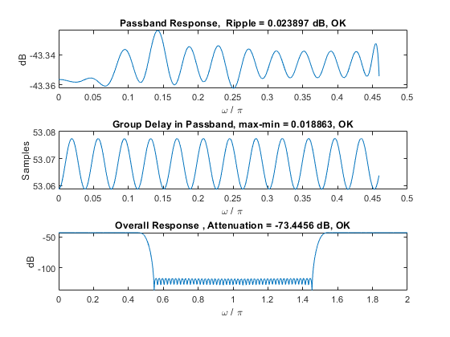
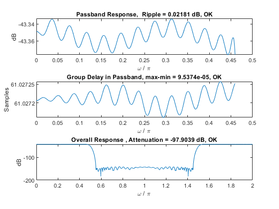

Contents
Heading
close all;
clc;
Single Stage
figure;
[y,time_1] = srconvert([1 zeros(1, 3000)]);
specs = verify(y);
single-stage :
Time : 68.8149seconds
ans =
'Passband Ripple: 0.024 dB
'
ans =
'Groupdelay Variation: 1.886264e-02 samples
'
ans =
'Stopband Attenuation: -73.446 dB
'

Multi-Stage
figure;
[y_multi, time_2] = srconvert_multi([1 zeros(1, 3000)]);
specs_multi = verify(y_multi);
multi-stage :
Time : 0.11757seconds
ans =
'Passband Ripple: 0.022 dB
'
ans =
'Groupdelay Variation: 9.537407e-05 samples
'
ans =
'Stopband Attenuation: -97.904 dB
'

Table of Times
implementation = ["single-stage" ; "multi-stage"];
time_spent_seconds = [time_1 ; time_2];
table(implementation, time_spent_seconds)
ans =
2×2 table
implementation time_spent_seconds
______________ __________________
"single-stage" 68.815
"multi-stage" 0.11774
Audio
[signal, fs] = audioread('wagner.wav');
[audio_update,~] = srconvert_multi(signal);
audiowrite('updated_wagner.wav', audio_update, 24000)
multi-stage :
Time : 0.50356seconds